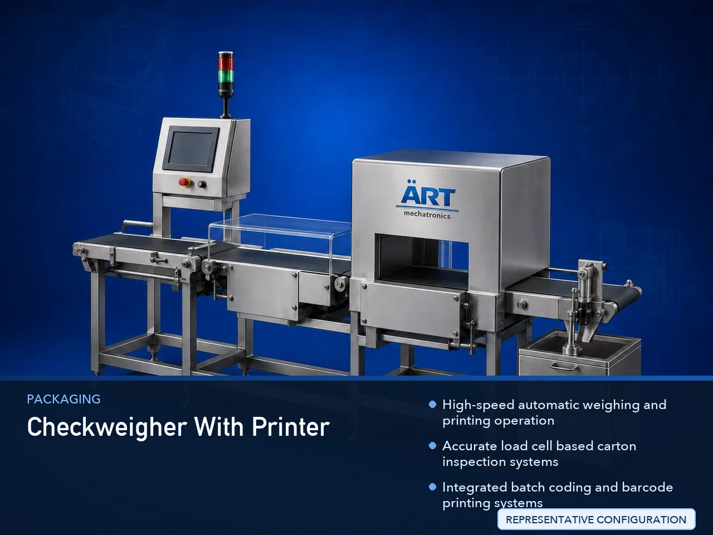

Checkweigher with Printer Machine (Automatic Carton Weighing & Printing System)
A Checkweigher with Printer Machine, also known as a Carton Weighing & Printing System, Automatic Checkweigher with Coding Machine, Inline Carton Inspection System, or Industrial Weighing & Batch Printing Machine, is an advanced industrial packaging and inspection solution designed for automatic…

About the Checkweigher With Printer
Checkweigher with printer systems are widely used for: ✔ Mono carton weight inspection ✔ Master carton weighing ✔ Batch coding and barcode printing ✔ QR code printing ✔ Product verification operations ✔ Inline quality inspection ✔ Carton traceability systems ✔ Packaging compliance operations
The machine improves: ✔ Packaging accuracy ✔ Product traceability ✔ Weight inspection reliability ✔ Production efficiency ✔ Packaging compliance ✔ Inventory management ✔ Export packaging quality
Industrial checkweigher with printer machines use: ✔ Precision load cell weighing systems ✔ Servo synchronized conveyor systems ✔ PLC and HMI automation controls ✔ Thermal inkjet or label printing systems ✔ Automatic reject and inspection mechanisms
to automatically weigh, verify, print, and inspect cartons with superior accuracy and high production efficiency.
Checkweigher with printer machines are widely used in industries such as:
Food processing industries Beverage industries Pharmaceutical industries Chemical industries Cosmetic industries Electronics industries Logistics industries FMCG industries
where product verification, packaging compliance, and high-speed inspection operations are essential.
The machine is highly suitable for: ✔ Mono carton inspection ✔ Master carton verification ✔ Batch coding operations ✔ Barcode and QR code printing ✔ Packaging quality control ✔ End-of-line carton inspection systems
ART Mechatronics offers high-performance checkweigher with printer machines, engineered for continuous industrial operation, precision inspection performance, intelligent printing integration, and reliable long-term packaging automation.
Working Principle of Checkweigher With Printer Machine
- 1. Carton Feeding & Conveyor Handling Mono cartons or master cartons are automatically transferred through synchronized conveyor systems.
- 2. Weighing & Data Processing Process Machine automatically measures carton weight using high-precision load cells and processes inspection data before printing operation.
Intelligent synchronization ensures accurate weight verification and smooth carton handling.
- 3. Carton Inspection & Printing Operation Machine handles: ✔ Mono cartons ✔ Master cartons ✔ Corrugated boxes ✔ Retail cartons ✔ Shipping cartons ✔ Industrial packaging cartons
accurately and continuously.
- 4. Weight Verification & Printing Process Machine performs: Weight inspection Underweight detection Overweight detection Batch coding Barcode printing QR code printing Label printing Product traceability coding
for efficient and compliant packaging operations.
- 5. Intelligent Automation & Rejection Integration Optional systems include: Automatic reject systems Vision inspection systems Barcode verification ERP connectivity Data logging systems
- 6. Finished Carton Discharge Approved cartons discharged automatically for: Case packing Palletizing Warehouse storage Export shipment handling
Types of Checkweigher With Printer Machines
- 1. Mono Carton Checkweigher with Printer Designed for: ✔ Retail carton packaging applications
- 2. Master Carton Inspection System Suitable for: ✔ Bulk packaging and shipping carton operations
- 3. Barcode & QR Printing Checkweigher Uses: ✔ Product traceability and packaging compliance systems
- 4. High-Speed Carton Inspection Machine Designed for: ✔ Ultra-fast industrial packaging operations
- 5. Servo Driven Checkweigher System Suitable for: ✔ Precision inline weighing and printing operations
- 6. Fully Automatic Carton Inspection & Printing System Designed for: ✔ Complete end-of-line packaging automation lines
Industries Using Checkweigher With Printer Machines
🍅 Food Processing Industry Snacks, spices, edible oils, sauces, and food carton inspection systems. 🥤 Beverage Industry Bottle cartons, beverage boxes, and packaging verification systems. 💊 Pharmaceutical Industry Medicine cartons, healthcare packaging, and serialization inspection systems. ⚗️ Chemical Industry Industrial cartons, chemical packaging, and compliance inspection systems. 🧴 Cosmetic & Personal Care Industry Perfume cartons, cosmetic packaging, and product verification systems. 🛒 FMCG Industry Consumer products and retail packaging inspection systems.
Features & Advantages
✔ High-speed automatic weighing and printing operation ✔ Accurate load cell based carton inspection systems ✔ Integrated batch coding and barcode printing systems ✔ PLC and servo automation control systems ✔ Improves packaging accuracy and traceability ✔ Reduces manual inspection dependency ✔ Supports mono cartons and master cartons ✔ Reliable long-term industrial performance ✔ Smooth integration with packaging automation lines
Technical Highlights
Machine Type: Checkweigher with printer machine Carton inspection and coding system Industrial weighing and printing machine Product Compatibility: Mono cartons Master cartons Corrugated boxes Retail cartons Industrial packaging cartons Integration: Load cell weighing systems Batch coding systems Barcode printing systems Automatic reject systems Features: PLC control system Servo synchronization Touchscreen HMI QR and barcode printing Inspection data logging systems Applications: Weight verification Batch coding Product traceability Packaging inspection Industrial carton handling Automation: Semi-automatic Fully automatic industrial systems
Turnkey Checkweigher & Printing Solutions
ART Mechatronics offers: Complete carton inspection systems Automatic weighing and coding solutions Packaging automation integration systems Conveyor synchronization systems Installation & commissioning After-sales service & AMC
Why Choose Art Mechatronics
Expertise in industrial packaging and inspection systems Customized carton inspection solutions for multiple industries High-performance and precision weighing technology Advanced PLC and intelligent automation systems Proven industrial packaging performance across sectors
Applications
Food Processing Plants Beverage Manufacturing Facilities Pharmaceutical Packaging Industries Chemical Packaging Units Cosmetic Manufacturing Plants FMCG Packaging Industries
Get pricing & specs for the Checkweigher With Printer
Share the product, target capacity, current process and plant location. These details help our engineers discuss the right machine or line configuration.
One partner, from design to start-up
ART Mechatronics designs, manufactures, installs and commissions your Checkweigher With Printer solution with regional presence in India, UAE and Thailand.